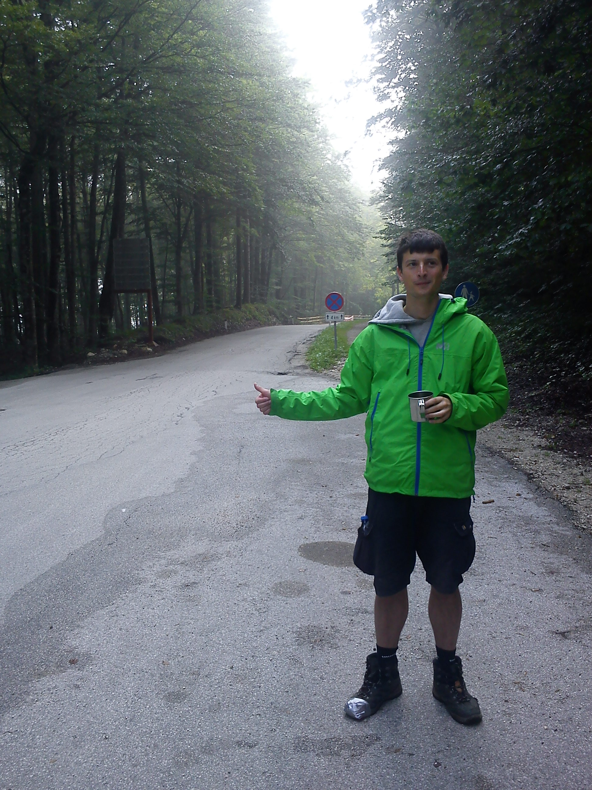

Filip Mazowiecki
I am an assistant professor (in Polish: adiunkt im. Samuela Eilenberga) at the University of Warsaw.
About me
I was: a research group leader in MPI for Software Systems in Saarbrücken; a postdoc at the University of Bordeaux; a postdoc at the University of Oxford; and a postdoc at the University of Warwick.
Earlier I was a PhD student at the Institute of Informatics, University of Warsaw under supervision of Filip Murlak and Emanuel Kieroński.
Videos
Concur teaser (or this in case YouTube is unhappy), Progressing on open problems.Contact
email: f.mazowiecki (at) mimuw (dot) edu (dot) ploffice: 3.110 (3rd floor in CeNT building)
Research
My main interests include automata, weighted automata, vector addition systems, and database related logics.Work for me
Since October 2023 I am the PI of the project "Counting models in formal verification". I'm looking for a PhD student and postdocs (about the hiring process).Past students
Philip Offtermatt jointly supervised with Michael Blondin. Here is our joint photo in a newspaper. Philip graduated and currently works for Informal systems.Links
Here is the cake list for the automata seminar.my sister, goblins
